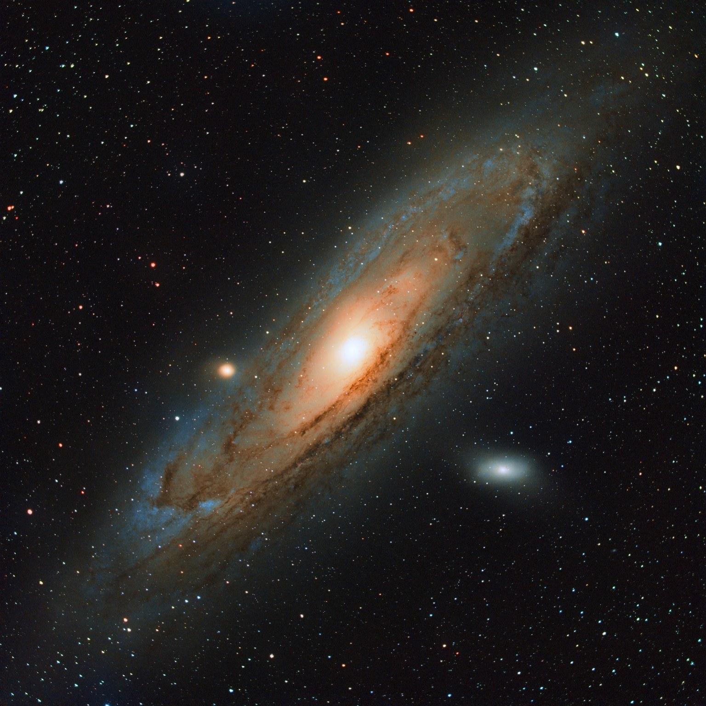

Andromeda Galaxy (M31)
Telescope: Altair 80
Reducer: 0.60×
Focal length: 289 mm
Camera: ASI533MC Pro
Filter: L-eNhance
Mount: HEQ5 Pro
Guiding: Fully guided
Exposure: 120 sec
Total integration: ~10 hours
Capture: ASIAIR
Stacking / processing: PixInsight